Tratamento dos dados no Scratch usando a extensão Visualizador de Dados
O Scratch é uma linguagem de programação por blocos a qual permite que crianças à partir de oito anos de idade aprenda a programar e criar animações, histórias interativas, jogos, simulações dentre outros. Ele possui uma comunidade online onde os projetos são compartilhados de forma que todos os visitantes e/ou usuários possam verificar os códigos utilizados para criar qualquer um dos projetos compartilhados. Algumas extensões oficiais são disponibilizadas na comunidade online.
Diversos outros desenvolvedores ao redor do mundo criam extensões diversas e disponibilizam para a comunidade em locais diversos. A extensão Visualizador de Dados, criada pela Cássia de Oliveira Fernandez e João Adriano Freitas (POLI-USP), foi disponibilizada no GitHub. Esta extensão permite que o Scratch receba dados do ThingSpeak, favorecendo assim, o tratamento dos dados por alunos que possuem poucos conhecimentos de programação. Por ser uma extensão não oficial, ela é utilizada com versões modificadas do Scratch. Aqui, utilizamos a versão disponibilizada pelo HackEduca em https://hackeduca.github.io/
A extensão Visualizador de Dados adiciona no Scratch os blocos que permitem a comunicação com o ThingSpeak. Para utilizá-la, é preciso acessar a versão modificada (https://hackeduca.github.io/) a qual abrirá uma tela de programação similar ao Scratch oficial. Em seguida, é preciso habilitar a extensão “Visualizador de Dados”, clicando no ícone localizado no canto inferior esquerdo da tela conforme demonstrado na Figura 26. 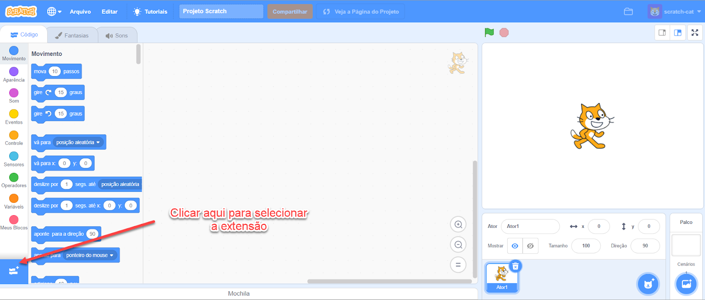 Figura 26. Tela de programação do Scratch disponível em https://hackeduca.github.io e localização do ícone para selecionar a extensão de Visualizador de Dados
Em seguida, para habilitar a extensão “Visualizador de Dados” escolha a extensão, conforme demonstrado na Figura 27. 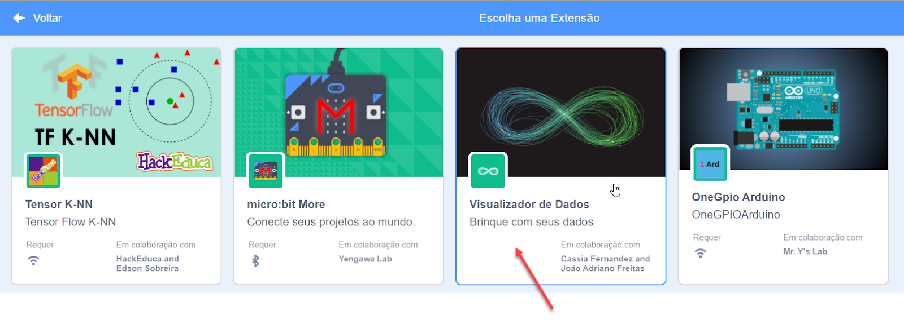 Figura 27. Selecionando a extensão Visualizador de Dados
A programação no Scratch consiste em arrastar blocos e encaixá-los de acordo com o projeto que deseja criar. Para compreender as programações básicas do Scratch basta acessar o site oficial: https://scratch.mit.edu/ e explorar os tutoriais disponibilizados em: https://scratch.mit.edu/projects/editor/?tutorial=all.
Para programar a versão do Scratch com a extensão de Visualizador de Dados, é necessário informar o código do Canal no bloco de definição de dados para ler o ThingSpeak, conforme indicado nas Figuras 28 e 29. Verificamos anteriormente como obter esse código (ID do Canal) na Figura 23. 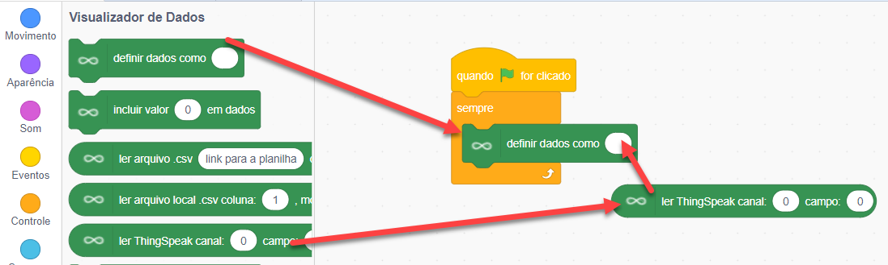 Figura 28. Como unir os blocos para inserir a chave da API
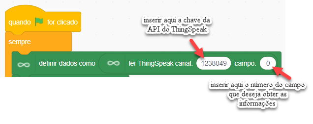 Figura 29. Local para inserir a chave da API do ThingSpeak
Em relação ao número do campo, no ThingSpeak vá em Channel Settings e verifique qual campo deseja obter os dados. No caso, o campo 1 (Field 1) refere-se a umidade e 2 (Field 2) refere-se aos dados relacionados a temperatura (Figura 30). 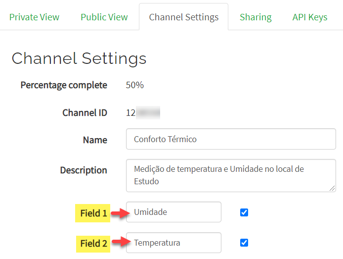 Figura 30. Verificando a numeração dos campos no ThingSpeak
Para programar a leitura da temperatura e da umidade utilizamos os comandos demonstrados na Figura 31. 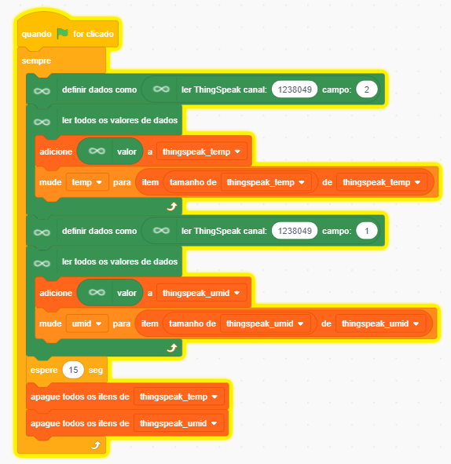 Figura 31. Programação no Scratch para ler os dados no Visualizador de Dados
O bloco laranja claro “mude para”, com o nome temp ou umid (referentes a temperatura e umidade respectivamente), é uma variável. Para criar a variável verifique a Figura 32, após criar a variável, basta nomeá-la. 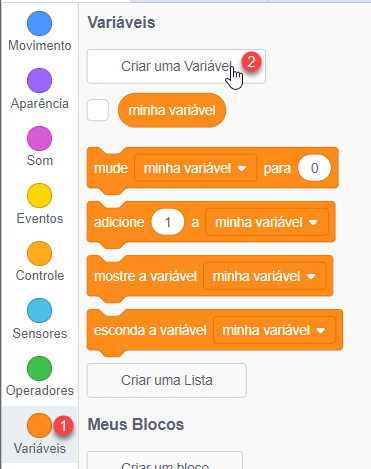 Figura 32. Criando uma variável no Scratch
Já os blocos laranja escuro (adicione, item, apague todos) são obtidos ao criar uma lista. Para isso, basta clicar em variáveis, escolher a opção “Criar uma lista” e nomear a lista. Aqui nomeamos como “ThingSpeak_temp” e “ThingSpeak_umid”. Veja na Figura 33 os últimos valores identificados na IDE do Arduino e na Figura 34 os mesmos valores identificados na extensão de Visualizador de Dados. 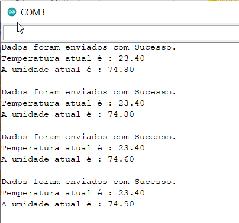 Figura 33. Valores identificados na IDE do Arduino
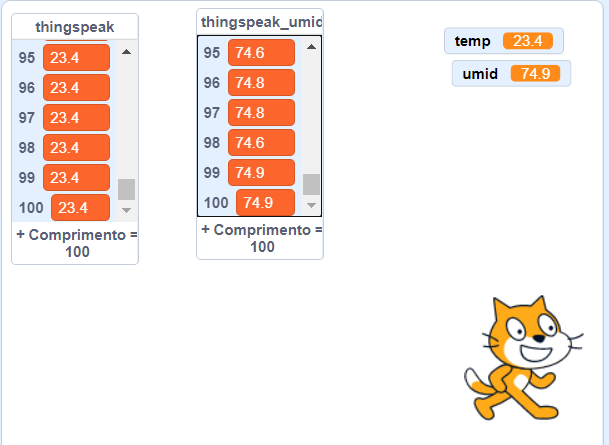 Figura 34. Valores identificados na extensão de Visualizador de Dados
A comunicação dos dados foi realizada por meio de animação criada por uma criança de 12 anos, tendo como parâmetros a temperatura de 23 graus como sendo o conforto térmico (KOWALTOSKI, 2011) aceitando uma variação entre 22 e 23 graus, temperaturas também considerada aceitável em estudos como de Lucas e Silva (2017).
Para os valores de umidade utilizamos as informações fornecidas pelo “Centro de Gerenciamento de Emergências – CGE - SP” que considera adequada entre 50% e 60%, estado de atenção entre 21 e 30%, estado de alerta entre 12 e 20% e estado de emergência abaixo de 12%
Ao identificar os valores de temperatura e umidade o Scratch muda o plano de fundo da tela e aparece com trajes personalizados oferecendo as seguintes dicas e/ou alertas. A Figura 35 mostra o exemplo de tela com temperatura de 0º e umidade relativa do ar em 59% 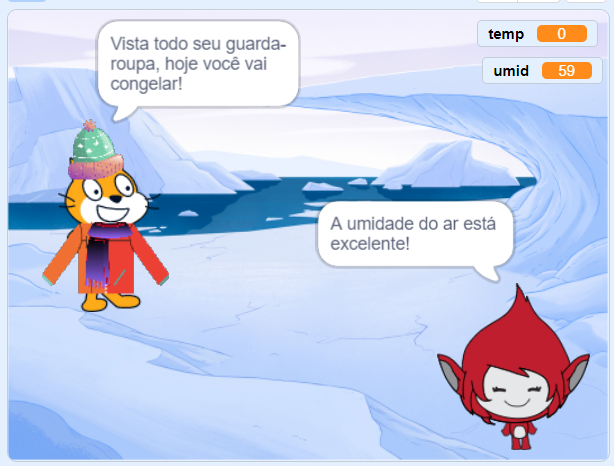 Figura 35. Temperatura de 0º e umidade relativa do ar em 59%
A Figura 36 mostra o exemplo de tela com temperatura de 13º e umidade relativa do ar em 70% 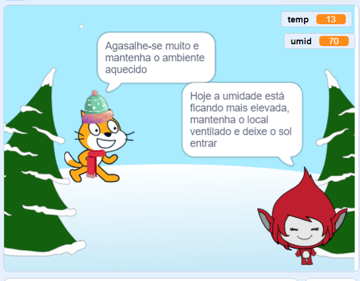 Figura 36. Temperatura de 13º e umidade relativa do ar em 70%
A Figura 37 mostra o exemplo de tela com temperatura de 16º e umidade relativa do ar em 45% 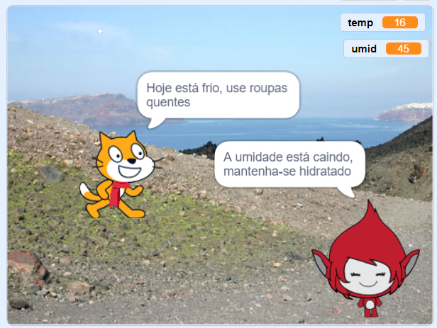 Figura 37. Temperatura de 16º e umidade relativa do ar em 45%
A Figura 38 mostra o exemplo de tela com temperatura de 20º e umidade relativa do ar em 30% 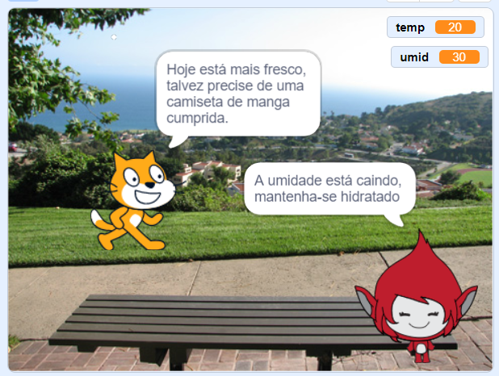 Figura 38. Temperatura de 20º e umidade relativa do ar em 30%
A Figura 39 mostra o exemplo de tela com temperatura de 23º e umidade relativa do ar em 60% 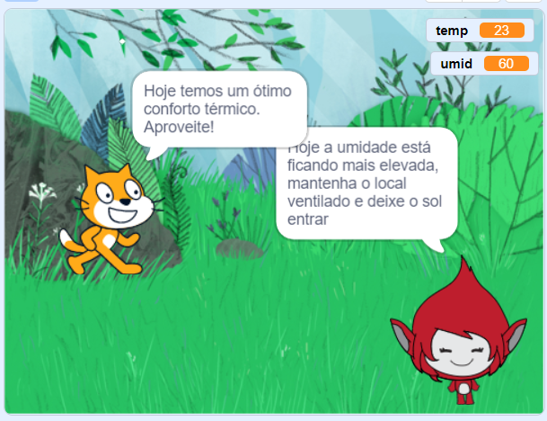 Figura 39. Temperatura de 23º e umidade relativa do ar em 60%
A Figura 40 mostra o exemplo de tela com temperatura de 26º e umidade relativa do ar em 20% 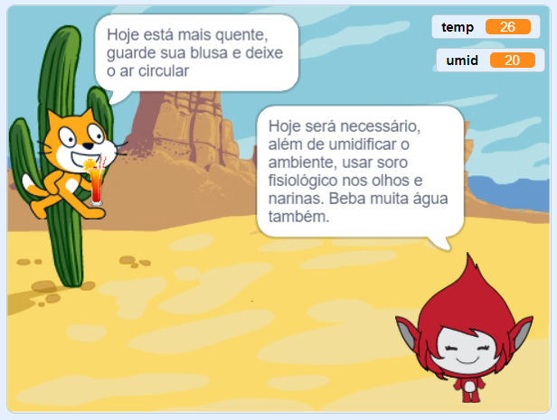 Figura 40. Temperatura de 26º e umidade relativa do ar em 20%
A Figura 41 mostra o exemplo de tela com temperatura de 29º e umidade relativa do ar em 12% 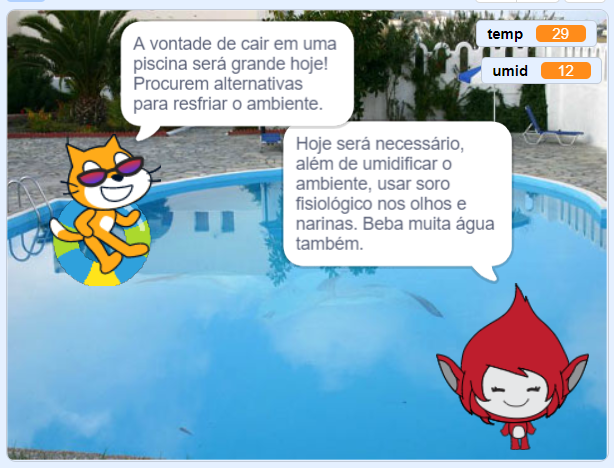 Figura 41. Temperatura de 29º e umidade relativa do ar em 12%
A Figura 42 mostra o exemplo de tela com temperatura de 34º e umidade relativa do ar em 12% 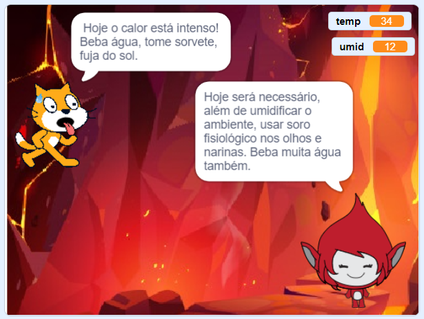 Figura 42. Temperatura de 34º e umidade relativa do ar em 12%
A programação realizada no Scratch para comunicar o valor da temperatura do ambiente, pode ser observada na Figura 43 a seguir: 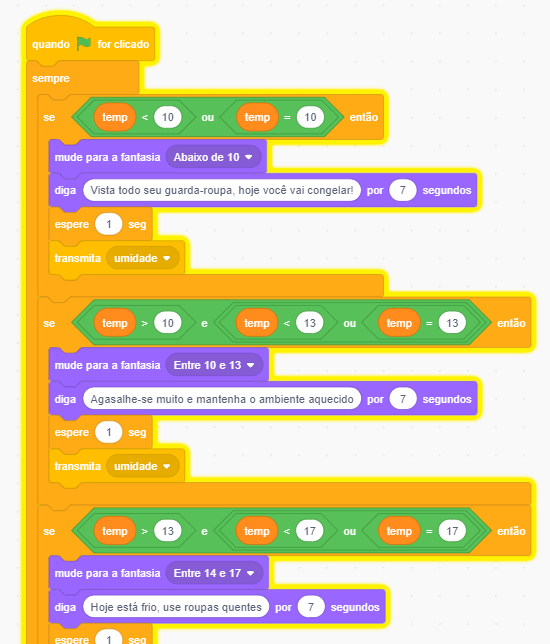 Figura 43. Programação para comunicar a temperatura do ambiente
A programação para comunicar a umidade registrada no ambiente, está disponível na Figura 44. 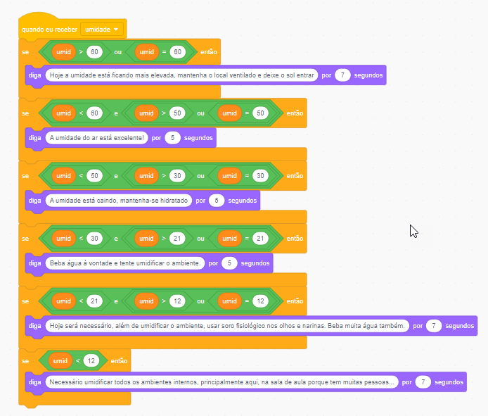 Figura 44. Programação para comunicar a umidade do ambiente
O programa com o código completo, incluindo os blocos para leitura dos dados no Thingspeak, a programação da temperatura e da umidade está disponível no link: Aqui